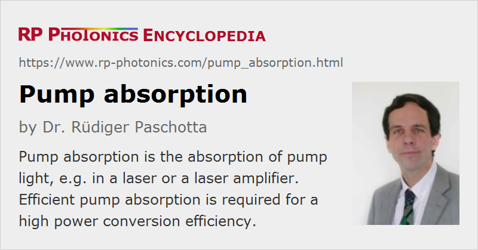

Pump Absorption
Definition: the absorption of pump light, e.g. in a laser or a laser amplifier
More general term: absorption
German: Pumpabsorption, Absorption des Pumplichts
Categories: lasers, physical foundations
How to cite the article; suggest additional literature
Author: Dr. Rüdiger Paschotta
In an optically pumped laser or amplifier, the gain medium is powered by supplying it with pump light. Only absorbed pump light can be useful in such a kind of device, whereas e.g. an optical parametric amplifier provides amplification (gain) for a small signal without absorbing significant amounts of power. Therefore, it is essential for the power efficiency of a laser or laser amplifier that the pump light is efficiently absorbed.
Calculating Pump Absorption
For very small pump intensities, or for devices operating with a negligible degree of excitation of the laser-active atoms or ions, the degree of absorption can be simply calculated from the doping concentration Ndop, the length L of the gain medium, and the absorption cross section σabs at the pump wavelength: the degree of power absorption is
Due to the wavelength dependence of the absorption cross sections, the degree of pump absorption also depends on the wavelength. For some gain media with a small absorption bandwidth, the absorption efficiency can be significantly compromised, e.g. when using a pump source with finite optical bandwidth, or when the emission wavelength depends on a varying device temperature.
For anisotropic laser crystals, the absorption cross sections can also be polarization-dependent. Pronounced polarization effects can occur e.g. in various types of vanadate lasers and tungstate lasers: pump absorption can be fairly efficient for one polarization, and fairly incomplete for the other polarization direction. It is then best to use a polarized pump source and properly adjust the polarization direction. Problems can arise e.g. when using a fiber-coupled diode laser as the pump source, where the polarization state of pump light may not only not be linear, but also change with temperature or when the fiber is moved; the laser's output power is then not stable.
The above equation is not valid in cases with absorption saturation, as discussed below.
Saturation of Pump Absorption
Some laser or amplifier devices exhibit a significant degree of excitation of the laser-active ions; this is particularly the case for those based on a quasi-three-level gain medium. The absorption is then saturated to some extent, simply because the density of atoms or ions in the ground state, from where they can absorb light, is depleted.
The degree of pump saturation will in general depend on the intensity of signal (laser) light. In a laser, for example, the lasing process may clamp the upper-state population to some relatively low level, so that the degree of pump saturation is also clamped (in steady-state operation) as soon as the laser threshold is reached: above threshold, there is no further dependence on pump power, except if the transverse profile of the excitation density is significantly power-dependent.
Note that a high level of excitation in some portion of the gain medium does not inevitably lead to significant pump saturation effects. The point is that a reduced pump absorption at some point can increase the pump intensity in other parts of the gain medium. What matters is essentially the overall absorbed pump power.
Measurement of Pump Absorption
In principle, the measurement of pump absorption is trivial: the incident pump power as well as the residual pump power have to be measured. However, there are many situations where this is not easy to do:
- The access to residual pump light can be difficult, e.g. when the pump light hits some resonator mirror – particularly when there is significant divergence of the pump beam, so that it is difficult to capture all of the residual pump light. In an end-pumped laser, a resonator mirror is sometimes removed for that measurement, but without laser action there is then no effect of reduced pump saturation. Other problems apply to side-pumped lasers, or to lasers with multiple passes of pump radiation through the gain medium.
- The incident pump power is also not always easy to measure. If the pump light comes from a laser diode (→ diode-pumped lasers), both the power and emission wavelengths may even be somewhat modified by back-reflection of pump light into the diode, or in cases with bidirectional pumping the two pump sources may influence each other.
For such reasons, it is often better to work out a laser design based on the knowledge of (unsaturated) low-intensity absorption, combined with theoretical knowledge on absorption saturation. In many cases (e.g. for most Nd:YAG lasers), pump saturation effects are not very strong and can be ignored altogether.
Optimizing Pump Absorption
Very efficient pump absorption could in principle be obtained with a laser design based on a gain medium with a large length and/or a high doping concentration. However, there are various limitations:
- In an end-pumped laser, a long crystal length increases the demands on the beam quality of the pump source, and may make it more difficult to obtain a high beam quality of the laser.
- For too high doping concentrations, quenching effects may reduce the efficiency of the gain medium.
- In a quasi-three-level gain medium, positive gain is achieved only for pump intensities above a certain transparency intensity. Therefore, the best power efficiency of an end-pumped quasi-three-level laser is achieved when the crystal length is chosen such that some portion of the pump light remains unabsorbed (if it cannot be reflected back).
In many cases, a pump absorption efficiency of e.g. 90% is considered to be satisfactory, as the negative side effects of measures for a further increased absorption efficiency would dominate.
Questions and Comments from Users
Here you can submit questions and comments. As far as they get accepted by the author, they will appear above this paragraph together with the author’s answer. The author will decide on acceptance based on certain criteria. Essentially, the issue must be of sufficiently broad interest.
Please do not enter personal data here; we would otherwise delete it soon. (See also our privacy declaration.) If you wish to receive personal feedback or consultancy from the author, please contact him e.g. via e-mail.
By submitting the information, you give your consent to the potential publication of your inputs on our website according to our rules. (If you later retract your consent, we will delete those inputs.) As your inputs are first reviewed by the author, they may be published with some delay.
Bibliography
| [1] | R. Paschotta, tutorial on "Fiber Amplifiers", part 2 on gain and pump absorption |
| [2] | R. Paschotta, tutorial on "Modeling of Fiber Amplifiers and Lasers" (in particular, see part 3) |
See also: lasers, optical amplifiers, optical pumping, The Photonics Spotlight 2006-11-04, The Photonics Spotlight 2007-08-22
and other articles in the categories lasers, physical foundations
|  |
If you like this page, please share the link with your friends and colleagues, e.g. via social media:
These sharing buttons are implemented in a privacy-friendly way!